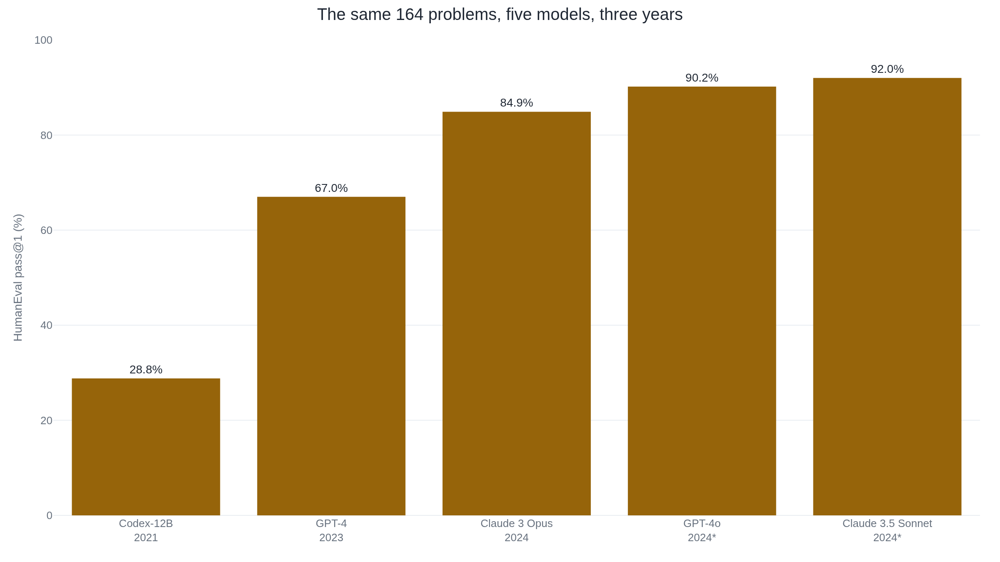
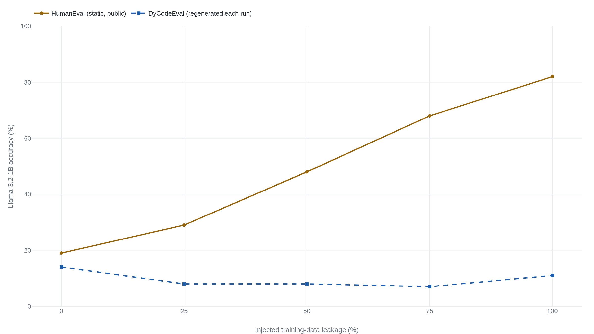

Hand-writing HumanEval's 164 problems solved contamination in 2021 and caused it by 2024
Pass@k is computed from many sampled tries per problem, the same arithmetic behind every reported HumanEval score, from Codex's 28.8% in 2021 to 2024's scores above 90%.
Why this matters
A HumanEval score is one of the first numbers a lab reaches for to say a model can write code, and it appears in nearly every model release. It reads like a plain fact about the model, the way passing 92% of a driving test reads as a fact about the driver. It is built instead from a procedure: sample the model many times on 164 fixed problems, count how many tries pass a small set of hidden checks, and estimate how often at least one try would succeed. By the end you can work that estimate by hand, see why a score at one try and at a hundred tries differ, and see why the design that made this test trustworthy in 2021 is why a 90-something percent score today says less than it implies.
- 01
- Change which SWE-bench tasks are counted and GPT-4o's score doubles: the sibling instrument, which grades a patch against a whole repository's own tests in a container instead of one function against a handful of hidden checks.
- 02
- The lab that ships an MMLU score rarely says how it was measured: the same problem, a headline number hiding its measurement conditions, by a different mechanism.
164 problems a model was not supposed to have already seen
When a lab says its model "solves 90% of HumanEval," the claim traces to one paper: Mark Chen and colleagues at OpenAI, in "Evaluating Large Language Models Trained on Code," published in July 2021.1 They built a benchmark called HumanEval: 164 Python problems, each with a function signature, a docstring, and a hidden set of unit tests, an average of 7.7 tests per problem.1 A model writes the function body, and the hidden tests decide whether it passed.
The 164 problems were written by hand, and the paper says why. Its models were trained on "a large fraction of GitHub, which already contains solutions to problems from a variety of sources," so a benchmark built from scraped problems risked testing memory instead of ability.1 Hand-writing problems no 2021 model could have trained on was how Chen and colleagues kept the test honest.
HumanEval grades one function against the tests it ships with. A
related instrument grades a whole repository instead, running a
project's own test suite in a sealed container, a measurement this
course covers on its own terms. The grading code is public too:
OpenAI's openai/human-eval repository ships the 164
problems and the sandboxed code that checks a solution against the
hidden tests.2
It is the actual code, so the metric taught here is the metric
anyone can run.
The guess that undercounts
To score one problem, Chen and colleagues sampled many completions,
not one: for each of the 164 problems they generated
n completions and counted c that passed
the hidden tests, using n=200 in the paper's own runs.1
Read that a model "solves 28.8% of HumanEval" and the natural
guess is c/n: 28.8% of 200 samples got the answer right. That
guess is correct only because the number in question is pass@1,
where c/n and the true estimator are the same formula.1
The trouble starts once the question is about more than one try. Say a model writes 10 solutions and 2 pass: n=10, c=2. Ask how often it would solve the problem given 5 of those tries at once, needing only one to work. A tempting shortcut treats the single-sample rate p̂=c/n=0.20 as fixed and computes 1−(1−p̂)⁵, as if 5 draws were 5 independent coin flips at that rate: 1−0.8⁵, or 67.2%.1 It is wrong. Chen and colleagues prove in an appendix that this shortcut is a consistent underestimate.1
The real answer, worked from the same n=10, c=2: choosing 5 of the 10 samples without replacement, the chance none is a passing one is C(8,5)/C(10,5), or 56/252. Subtract that from 1 and pass@5 is 77.8%, over 10 points above the shortcut.1 The gap is not rounding error. The shortcut assumes 5 draws with replacement, like flipping one weighted coin 5 times. Pass@k is 5 draws without replacement from a fixed pool of 10 completions the model already produced: different processes, different expected values.1
- nsamples drawn for one problem.
- cof those n, the number that pass the hidden tests (n−c fail).
- kthe number of tries the model is credited with.
openai/human-eval harness computes it, the same
formula in the paper's numerically stable implementation and the
repository's own evaluation code.12
What pass@1 and pass@100 actually ask
Pass@1 and pass@100 answer different questions: does the first attempt work, or does one of a hundred. Take a model with a modest 10% chance of solving a problem on any single try, c=20 of the paper's own n=200 budget. It solves on the first attempt 10% of the time. Give it 10 tries and the odds one lands rise to 66%. Give it 100 and the estimator is effectively certain, near 100%.1 Only the number of tries changed.
| Model | pass@1 | pass@10 | pass@100 |
|---|---|---|---|
| Codex-300M | 13.2% | 20.4% | 36.3% |
| Codex-2.5B | 21.4% | 35.4% | 59.5% |
| Codex-12B | 28.8% | 46.8% | 72.3% |
| GPT-J-6B | 11.6% | 15.7% | 27.7% |
One dial controls how spread out those samples are: temperature, a setting that governs how much randomness enters each next word picked. At low temperature the model leans on its single most likely continuation, so samples look alike; at high temperature it draws more from less-likely continuations, so samples diverge. Chen and colleagues tuned temperature per metric: 0.2, close to deterministic, for pass@1; 0.8, far more random, for pass@100.1 With one try, the safest bet is the model's best guess. With a hundred tries, only one has to land, so spreading the guesses out pays.
The problems stayed fixed while the scores kept climbing
The 164 problems Chen and colleagues wrote in 2021 have not
changed since. They sit unmodified in the public
openai/human-eval repository, hidden tests
included,2 and anyone
can read every solution posted to them since: on GitHub, in blog
posts, in papers that quote them as examples.
Reported pass@1 on that same fixed set climbed steadily. Codex-12B solved 28.8% in 2021.1 GPT-4 solved 67.0% in 2023, more than double.3 Claude 3 Opus solved 84.9% in 2024.4 By late 2024, Meta's reported figures had GPT-4o at 90.2% and Claude 3.5 Sonnet at 92.0%.5 Three years, five models, the same 164 problems, and the reported number more than tripled.

Some of that climb is real progress; newer models write better code. But the design that made HumanEval trustworthy in 2021 also undercuts it later. Hand-writing the 164 problems kept them out of a 2021 model's training data. Publishing them, so anyone could verify a score, put them inside most models' training data within a few years. One year's fix became a later year's leak.
Weak tests and memorized answers are not the same failure
A rising HumanEval score can be inflated two ways, often run together in coverage of the benchmark: the hidden tests are too weak to catch a wrong answer, or the model has already seen the answer. The fix for one does nothing for the other.
The first problem is the tests. HumanEval ships an average of 7.7 hidden tests per problem, too few to catch every subtly wrong function. A team at the University of Illinois Urbana-Champaign, independent of OpenAI, built EvalPlus: they expanded each problem's suite roughly eightyfold, to 764.1 tests on average, and re-graded the same models against HumanEval+.6 Scores fell across the board: GPT-4 dropped 13.1 points, ChatGPT 12.6, pass@1 by as much as 19.3%, pass@100 by as much as 28.9%.6 None of that is about training data; a model that had never seen HumanEval could still pass with subtly wrong code, because the tests never asked the right question.
The second problem is separate: whether the training data already contained the problems or their solutions. Researchers at Yale, also independent of OpenAI, searched two large training corpora and found 12.2% of HumanEval's solutions nearly verbatim in the Pile and 18.9% in the Stack.7 Removing those problems changed which model looked strongest: the accuracy gap between StarCoderBase-15.5B and Pythia-12B shrank from 23.8 points to 13.9.7 That is contamination doing its work: the model had already read the answer.
How much contamination moves a score depends on who measures it. OpenAI's own check on GPT-4 found about 25% of HumanEval overlapping its training data, yet GPT-4 scored 65.58% on the clean remainder, a degradation of just 2.12 points by OpenAI's own count.3 A controlled experiment tells a starker story: researchers deliberately leaked a growing share of HumanEval into three small models' fine-tuning data and re-tested them. Llama-3.2-1B's HumanEval accuracy rose from 19% with no leaked data to 82% with all of it leaked.8 The same models, tested on DyCodeEval, regenerated fresh each run, showed no such rise: Llama-3.2-1B's score moved from 14% down to 11% over the same range.8 Meta, testing its own Llama 3 models, found HumanEval so pervasively overlapped with common training data that its usual contamination measure produced no usable estimate at all, and dropped the benchmark from that part of its report.5 A small effect, a large one, and a broken measure are three outcomes from three methods. The honest reading is that contamination's size depends on the model, the training data, and how "contaminated" gets defined.

Even without contamination, "GPT-4's HumanEval score" is not one figure. The 67.0% is from the original GPT-4 Technical Report; a later point release, GPT-4T, scored higher, per Anthropic's model card.4 Meta's reported figures a year later put a GPT-4 variant at 86.6%, almost 20 points above.5 Epoch AI, independent of every lab named here, makes the general point: self-reported numbers disagree mostly because "evaluators often do not report what prompt and temperature they used."9 A HumanEval score is only comparable to another when both name the model version, the sampling settings, and the date.
The takeaway
Pass@k is a statistical estimate, computed from many sampled tries against 164 hand-written problems, of how likely at least one of k tries would succeed, using the formula here. Pass@1 and pass@100 are different questions on purpose, which is why Codex-12B could truthfully report both 28.8% and 72.3% on the same test. None of that is broken. What breaks is the second half of the story. OpenAI hand-wrote those 164 problems in 2021 so no model had already seen them, and keeping the set small, fixed, and public all but guaranteed that within a few years most models had. Add a second failure, hidden tests too sparse to catch subtly wrong code, and a HumanEval score above 90% today says as much about training data and grading as about how well a model writes code. The next time a HumanEval number appears, ask not just how high it is but which model version, sampled how many times, at what temperature, and how much training data had already seen the answer.
- 01
- openai/human-eval on GitHub: the runnable harness and the 164 problems themselves, for anyone who wants to compute pass@k by hand.
- 02
- evalplus/evalplus on GitHub: the HumanEval+ project, with the expanded test suites and current model scores.
Sources
- Chen et al. · Evaluating Large Language Models Trained on Code (arXiv:2107.03374, 2021)
- openai/human-eval GitHub repository (dataset and evaluation harness)
- OpenAI · GPT-4 Technical Report (arXiv:2303.08774, 2023)
- Anthropic · The Claude 3 Model Family: Opus, Sonnet, Haiku (model card, 2024)
- Meta AI · The Llama 3 Herd of Models (arXiv:2407.21783, 2024)
- Liu, Xia, Wang & Zhang · Is Your Code Generated by ChatGPT Really Correct? Rigorous Evaluation of Large Language Models for Code Generation (arXiv:2305.01210, 2023)
- Riddell, Ni & Cohan · Quantifying Contamination in Evaluating Code Generation Capabilities of Language Models (arXiv:2403.04811, 2024)
- Chen et al. · Benchmarking Large Language Models Under Data Contamination: A Survey from Static to Dynamic Evaluation (arXiv:2502.17521, 2025)
- Epoch AI · About: Benchmarking